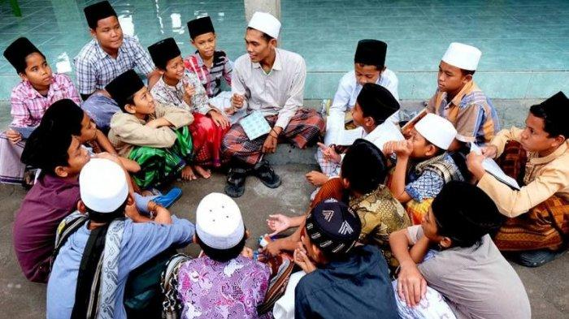
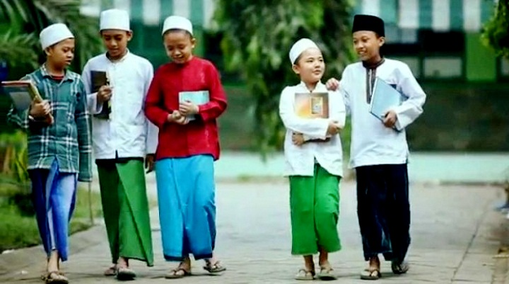

Program Tahfidz Al-Qur'an
Melatih santri untuk menghafal Al-Qur'an dengan metode yang terstruktur dan efektif.

Lingkungan Islami
Lingkungan yang mendukung pembentukan karakter islami dan kemandirian santri.

Ekstrakurikuler Unggulan
Beragam kegiatan ekstrakurikuler yang mengembangkan potensi akademik dan non-akademik.